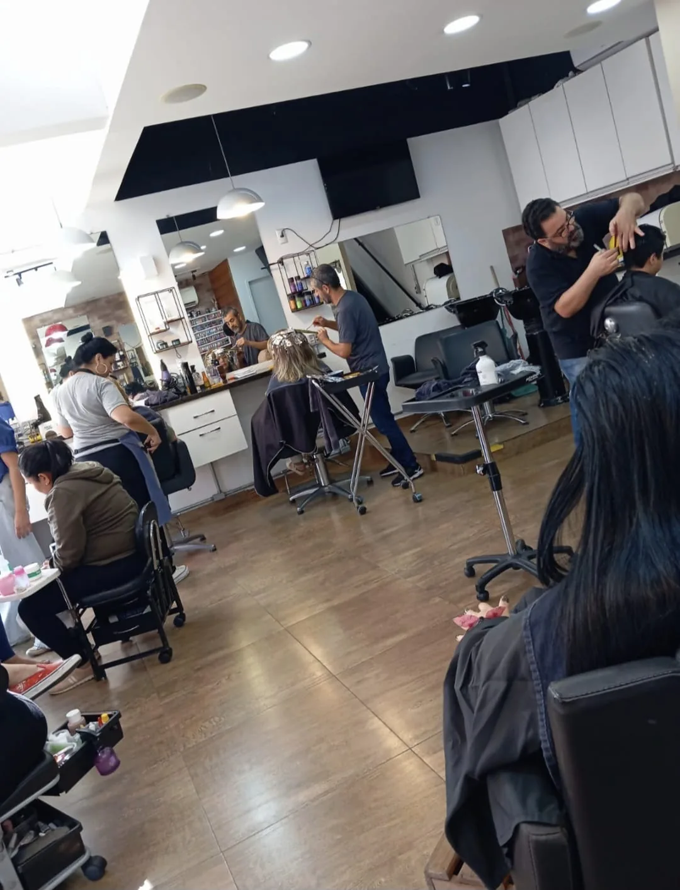
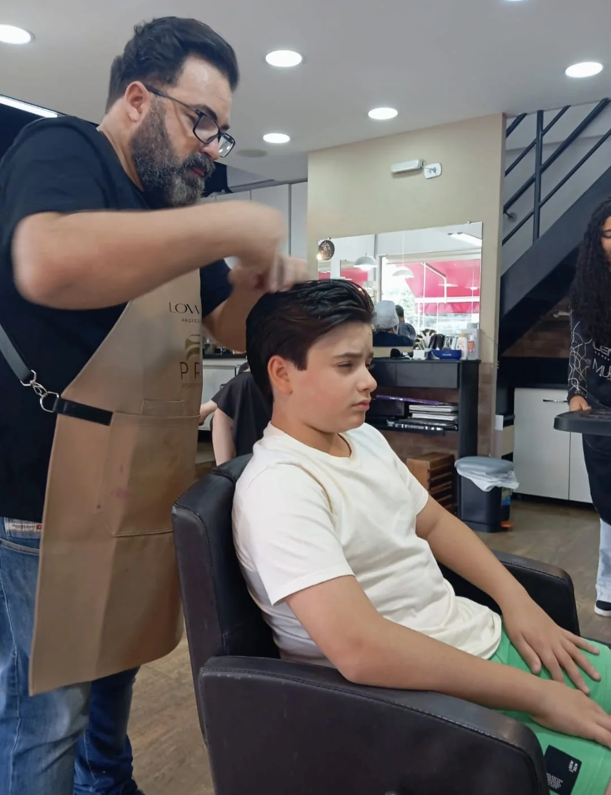
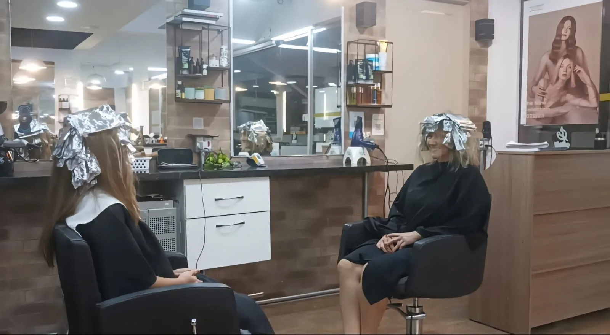
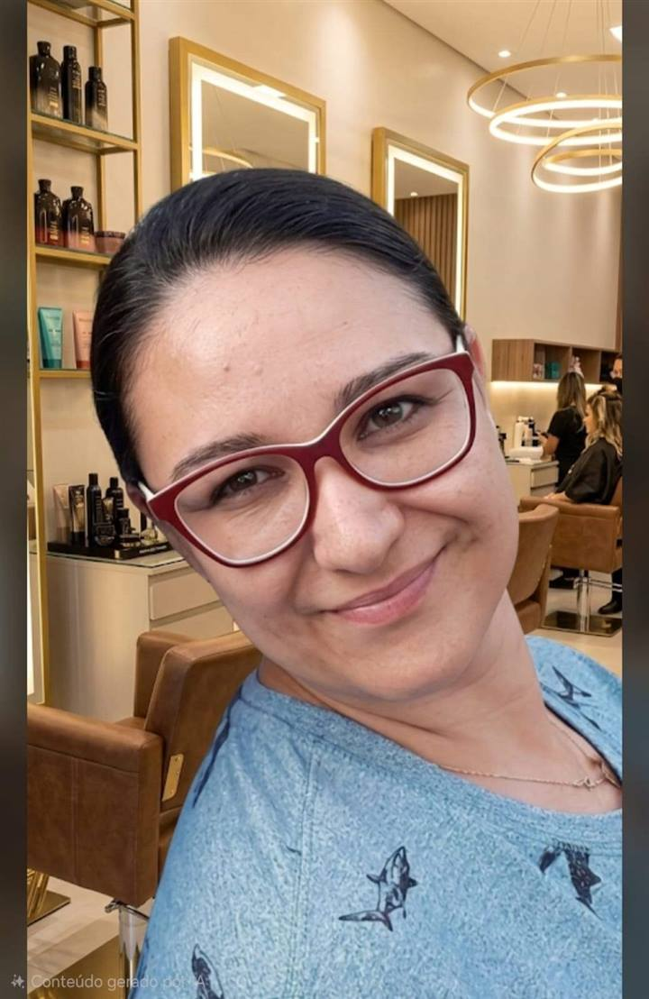
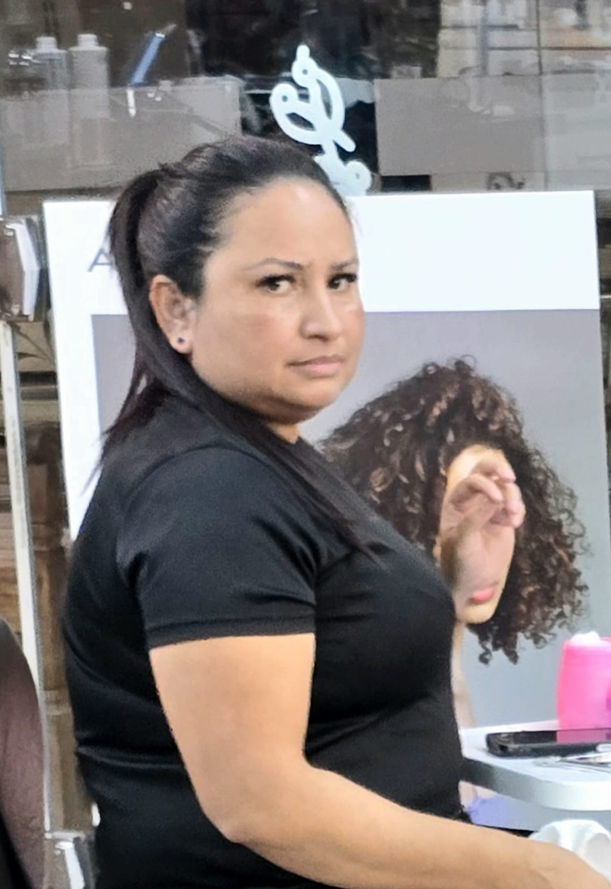

Cabelos
Cortes, escovas, hidratação, coloração e tratamentos para valorizar sua beleza com leveza, técnica e cuidado.
O Ateliê Villa São Francisco é um salão de beleza localizado no Open Mall Pátio Jaguaré, em São Paulo, com serviços de cabelo, unhas, sobrancelhas e depilação em um ambiente acolhedor, elegante e profissional.


Do cuidado com os cabelos aos detalhes das unhas, sobrancelhas e depilação, oferecemos uma experiência completa para você se sentir bem cuidada em todos os momentos.
Cortes, escovas, hidratação, coloração e tratamentos para valorizar sua beleza com leveza, técnica e cuidado.
Manicure, pedicure, esmaltação e cuidados para mãos e pés, com higiene, capricho e acabamento delicado.
Design de sobrancelhas para valorizar o olhar, respeitando seus traços e trazendo mais harmonia para a expressão.
Depilação com cuidado, conforto e atenção aos detalhes, em um atendimento pensado para deixar você mais segura e à vontade.
O Ateliê Villa São Francisco nasceu para oferecer uma experiência de beleza completa, acolhedora e profissional. Localizado no Open Mall Pátio Jaguaré, em São Paulo, nosso espaço reúne serviços de cabelo, unhas, sobrancelhas e depilação para mulheres que valorizam cuidado, praticidade e bem-estar.
Cada atendimento é realizado com atenção aos detalhes, escuta e carinho, para que você se sinta confortável desde a chegada até o resultado final.

No Ateliê Villa São Francisco, cada atendimento é realizado por profissionais que unem experiência, escuta e cuidado para valorizar a beleza de cada cliente de forma personalizada.
Atua com técnica, visagismo e atendimento personalizado para criar cortes, cores e transformações que respeitam o estilo de cada cliente.

Realiza depilação com cuidado, higiene e atenção ao conforto, conduzindo cada atendimento com delicadeza e orientação clara.
Une experiência, visagismo e técnica para cortes, cores e cuidados capilares pensados para a rotina e identidade de cada cliente.
Danny Martins transforma o cuidado com mãos e pés em um momento de beleza, delicadeza e precisão. Seu atendimento é marcado por unhas bem acabadas, cutículas impecáveis e esmaltação feita com capricho em cada detalhe.

Tânia Santos reúne mais de duas décadas de experiência em um atendimento minucioso, seguro e elegante. É especialista em acabamento refinado, cutículas muito bem cuidadas e unhas com aparência limpa, bonita e duradoura.
Nossa equipe entende que cada pessoa tem um estilo, uma rotina e uma expectativa diferente. Por isso, os atendimentos são conduzidos com atenção aos detalhes, orientação profissional e respeito à individualidade de cada cliente.
Mais do que um salão, somos um espaço de cuidado para quem busca atendimento de qualidade, localização prática e uma experiência acolhedora.
Você é recebida com atenção, respeito e cuidado em cada detalhe do atendimento.
Equipe preparada para oferecer serviços de beleza com técnica, capricho e profissionalismo.
Estamos no Open Mall Pátio Jaguaré, com fácil acesso para clientes da região do Jaguaré, Vila São Francisco, Butantã e arredores.
Cabelo, unhas, sobrancelhas e depilação em um só lugar, facilitando sua rotina de cuidados.
Nota 4,9 no Google, com mais de 158 avaliações de clientes.
Um espaço agradável, feminino e pensado para que você se sinta confortável.
Veja detalhes do ambiente, dos atendimentos e dos serviços realizados no Ateliê Villa São Francisco. Para acompanhar mais resultados e bastidores, veja nosso trabalho no Instagram.
A confiança das nossas clientes é um dos nossos maiores diferenciais. O Ateliê Villa São Francisco possui nota 4,9 no Google, com mais de 158 avaliações.
“Atendimento excelente, profissionais muito atenciosos e ambiente agradável.”
“Serviço de qualidade, equipe cuidadosa e resultado sempre muito bom.”
“Frequento há anos e sempre sou muito bem atendida. Recomendo muito.”
O Ateliê Villa São Francisco está localizado em uma região de fácil acesso, no Open Mall Pátio Jaguaré, em São Paulo. Estacionamento prático e ambiente climatizado para receber você.
Fale conosco pelo WhatsApp e agende seu horário no Ateliê Villa São Francisco. Será um prazer receber você em nosso espaço.
Agendar agora pelo WhatsApp →